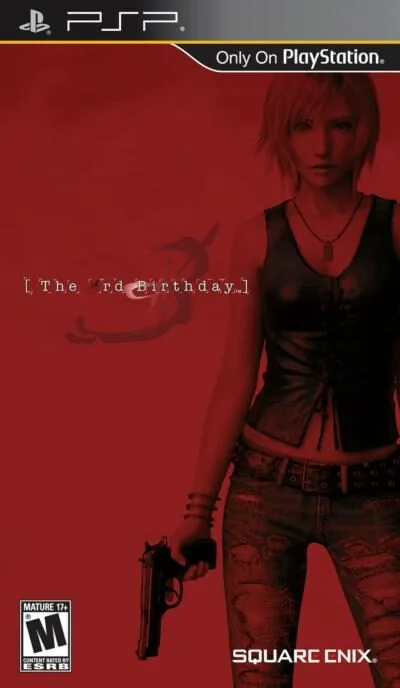

PSP
The 3rd Birthday
- Año: 2011
- Desarrollador: Hexa Drive
- Género: Acción
El juego tiene lugar en la isla de Manhattan, en Nueva York. El jugador asume el rol de Aya Brea, y deberá luchar contra unas criaturas misteriosas llamadas "Twisted" que amenazan a la ciudad.
MODOS DE JUEGO -------------- Este es un videojuego de rol de acción nombrado por Square Enix como "Juego de rol de acción cinematográfica". Su director, Hajime Tabata, mencionó que las partes de juego y de guion están entrelazadas gracias a una nueva habilidad llamada "Overdive", que permite al jugador intercambiarse con el cuerpo de uno de sus camaradas, permitiéndole controlar a personajes no jugadores aliados. Se puede ordenar a otros compañeros de equipo apuntar hacia enemigos concretos o que se defiendan en un combate. El jugador puede cambiar al personaje que controla en tiempo real, combinando sus acciones en combate.2 El juego tiene algunos elementos de juegos de disparos en tercera persona tanto dentro como fuera de los combates. El juego se maneja con una cámara ubicada por encima del hombro.
ARGUMENTO ---------
Durante un día de nochebuena nevado en Manhattan, en el año 2012, sale de la tierra una súbita oleada de criaturas desconocidas, matando a cientos de personas y destruyendo edificios durante estos hechos. Se les dio el nombre de "Babels". Estas raíces, similares a las de las plantas, traen consigo formas de vida que atacaban y aparentemente consumían a humanos, a las que se les nombró "Twisted". Un año después del ataque se crea un equipo de investigación conocido como el CTI (Investigación Anti-Twisted en inglés). Uno de sus miembros es Aya Brea, que apareció vestida de boda y empapada en sangre frente a la Catedral de St. Patrick en el año 2010, poco antes de la aparición de los Babeles y los Twisted. El Dr. Hyde Bohr, jefe del CTI, encontró a Aya totalmente amnésica. Tras cuidar de Aya, el CTI descubrió que Aya era capaz de transferir su alma de un cuerpo a otro, y se le llamó "Overdive" a esta habilidad. Bohr y su equipo pretendían utilizar esta habilidad única de Aya para viajar a través del tiempo e impedir el desastre. Construyeron una máquina llamada "Sistema de Overdive", que utiliza la habilidad de Aya y puede enviarla al pasado para poseer la psique de otra persona, y por lo tanto, sus acciones. La máquina es completada en el año 2013, para luego utilizarse dos años después de cuando aparecieron los primeros Twisted.
Tras completar su primera misión, Aya descubre que puede cambiar el pasado para alterar el futuro. Al despertarse averigua que algunos hechos ocurridos antes de la inmersión no tuvieron lugar, mientras que otros nuevos sucesos ocurrieron tras la inmersión. Por ejemplo, Gabrielle, que murió durante un entrenamiento, ahora estaba viva gracias a su esfuerzo en la misión. Sin embargo, esto provocó la muerte de Thelonious Cray, lo que causó una nueva misión para salvarle en el pasado. Mientras sigue completando misiones, conoce a unos Twisted muy poderosos que se distinguen de los normales en dos cosas: La primera es que estos Twisted son humanos mutados, en concreto humanos que ella había conocido, como Kyle Madigan. La segunda es que estos Twisted conservaban la inteligencia humana que les faltaba a los Twisted de menor categoría y más numerosos. Tras derrotar a cada uno de estos Twisted especiales, Aya recupera fragmentos de sus recuerdos, el más importante que tenía una hermana llamada Eve Brea, y luego que Aya estaba prometida con Kyle Madigan. Tras un incidente en el que Kyle Madigan destruyó la sede central del CTI y el dispositivo de Overdive, Aya se reúne con Kunihiko Maeda, quién le respalda mientras ella sigue combatiendo en el presente para resolver todo el misterio tras la aparición del Babel, los Twisted y los Twisted con forma humana, apodados por Maeda como los High Ones. Aya acaba descubriendo que Bohr es el principal antagonista, un High One. Bohr había planeado la muerte del resto de High Ones para poder construir el Gran Babel. La investigación de Maeda descubre que el Gran Babel actúa como un enorme sistema de Overdive. Bohr quería sumergirse en el pasado a la Hora cero, donde se iniciaron todos los sucesos.
Aya se enfrenta a Bohr y este acaba arrastrándole al fluir del tiempo hasta la Hora cero, que era el momento de su propia boda con Kyle Madigan en el año 2010. Bohr, tras explicar que todos los High Ones tienen la habilidad de inmersión, se había sumergido en su propio cuerpo. Continuó diciendo que cuando la verdadera Aya estaba al borde de la muerte tras ser atacada por un equipo SWAT que había asaltado la iglesia, Eve Brea intentó "tocar" a Aya. Esto provocó el nacimiento de la habilidad de Overdive. Aya era en realidad Eve dentro del cuerpo de Aya. Sin embargo, Eve había fragmentado accidentalmente el alma de Aya al sumergirse en su cuerpo, y estos fragmentos fueron dispersados por el tiempo y el espacio para dar a luz a los Twisted. Los High Ones, por otro lado, fueron creados a partir del cuerpo sin alma de Eve, por lo que también ganaron sus recuerdos y la habilidad de Overdive.
Tras hacer que Eve regresara a su propio cuerpo, Bohr suplica a Eve que le asimile para dar a luz a una especie más evolucionada. Al negarse Eve, Bohr intenta forzar el proceso, pero recibe varios disparos de Aya, que había regresado a su cuerpo de alguna forma. Pero la crisis de los Twisted no se eliminaría hasta que ambas fuentes desaparecieran. Tras lamentar no haber intercambiado sus votos matrimoniales con el ahora difunto Kyle, ordena a Eve que la dispare en el pecho. Eve, comprensiblemente emocionada, lo hace tras intercambiar su cuerpo con el de Aya. Al hacerlo nunca nacen ni los Twisted ni los High Ones, y Eve también deja de existir, creando una nueva línea temporal.
El final muestra a Eve, en el cuerpo de Aya, aceptando casarse con Kyle. Pero para su sorpresa Kyle la llama Eve, y no Aya, diciéndola que viva su propia vida, y que él y Aya cuidarán de ella. Eve se queda sin palabras, pero sonríe mientras Kyle le desea un feliz cumpleaños, antes de buscar la "eternidad"; que significa que iba en busca de Aya.
En el final posterior a los créditos (que se puede conseguir tras pasarse el juego dos veces), Eve, en el cuerpo de Aya, camina por las calles de Nueva York en navidad. Se detiene y coge con la mano un copo de nieve. En ese momento, una mujer con chaqueta marrón y el mismo corte de pelo de Aya pasa por su lado, deseándola un feliz cumpleaños, y desapareciendo sin más cuando Eve se da la vuelta.
PERSONAJES ----------
Aya Brea
A pesar de tener casi cuarenta años, Aya tiene el aspecto de una chica de 25 años gracias a sus mitocondrias avanzadas. Esto la convierte en la única candidata viable para el sistema Overdive. Ha perdido todos sus recuerdos debido a circunstancias misteriosas, lo que ha cambiado por completo su personalidad respecto a los dos primeros Parasite Eve: Se muestra más vulnerable, y lucha por un motivo desconocido. Tiene la capacidad de viajar a través del tiempo con el sistema Overdive, y también ha conseguido la habilidad de intercambiar su cuerpo. Es el arma secreta de la raza humana en la lucha contra los Twisted. En algunos tráilers puede verse con un anillo de boda. En la versión inglesa se le da voz gracias a Yvonne Strahovski.
Eve Brea
Eve fue adoptada como la hermana de Aya tras el incidente de Neo Ark en Parasite Eve 2, aunque es en realidad un clon de Aya. Antes de los eventos de The 3rd Birthday, se dice que desapareció junto con Kyle Madigan, y debido a la amnesia de Aya, se desconoce el motivo. Los tráilers apuntan a que Eve tiene algún tipo de relación con los incidentes de los Twisted.
Kyle Madigan
El final de Parasite Eve 2 indica que Kyle tuvo una relación amorosa con Aya. En los tráilers se les muestra a Aya y Kyle casados. Sin embargo, él y Eve han desaparecido en circunstancias misteriosas en The 3rd Birthday. Los últimos vídeos han mostrado a Aya viendo a Kyle, pero no sabe quién es en realidad. Los vídeos indican que Kyle está relacionado de alguna forma con los incidentes de los Twisted.
Kunihiko Maeda
Tras los sucesos del incidente del cierre de Nueva York del primer Parasite Eve, Maeda volvió a Japón, pero regresó a Nueva York tras la epidemia de los Twisted. En The 3rd Birthday, Maeda tiene un refugio especial que ha creado a partir de un viejo almacén. Es un especialista en investigación mitocondrial y un viejo amigo del pasado, que se ha ganado la confianza de Aya.
Hyde Bohr
Jefe de la división Overdive del CTI. Un experto en la parte tecnológica de una investigación que guiará a aquellos que envíe al campo de batalla. Sus aliados confían en él, pero se le puede malentender con facilidad debido a sus formas frías y su persistencia sobre la perfección. Es el principal enemigo del juego.
Thelonious Cray
Antiguo agente de las fuerzas especiales del ejército, actualmente un investigador especial de la división de investigación Overdive del CTI. Cuando se creó el CTI se le contrató debido a su conocimiento en estrategias de combate. Es el entrenador de Aya, y aparentemente le enseñará al jugador los controles del juego.
Dr. Blank
Un investigador de la división Overdive del CTI y a su vez el jefe de sistemas informáticos. Su verdadero nombre es un misterio, pero le llaman Dr. Blank porque dejó su ficha de inscripción en blanco.
Karud "Boss" Owen (Hunter "Boss" Owen en la versión europea)
Director del CTI. Aunque su objetivo era escalar dentro del FBI, se le ubicó temporalmente como director del CTI durante la invasión de los Twisted. En los vídeos aparentemente intenta matar a Aya, llamándola "monstruo en el que no se puede confiar".
Gabrielle Monsigny
Una investigadora especial de la división Overdive del CTI. Es una francotiradora excepcional, y entrena a Aya en este sector. En los antiguos vídeos le presta su cuerpo a Aya tres días antes de una operación de Overdive.
Emily Jefferson
Emily es la mejor amiga de Eve. Una chica amistosa, amable y estrafalaria, la encuentra Aya en el Episodio 1 y la da un mensaje de Eve antes de transformarse en Twisted y posteriormente muriendo a manos de Aya.
Controles
que Aya se mueva con el joystick. Según las reseñas: R apunta solo al enemigo más cercano (mantener: apuntar y disparar), X (△) hace el Overdive (saltar a otro cuerpo; mantener: moverse por el mapa), y cuando sale un triángulo sobre el enemigo, X lo remata; la cruceta mueve la cámara (⚠️ en la bartop el joystick hace las dos cosas). Falta saber qué botón dispara. ¿Va fluido?
Mando de PSP. El joystick mueve la cruceta y también la palanca analógica, porque muchos juegos de PSP solo se mueven con ella.
| Panel | Juego |
|---|---|
 | ✕ |
 | ○ |
 | R |
 | □ |
 | △ |
 | L |
 | Start |
 | Select |
+  | Salir del juego |
El panel en PSP


Argumento
Recopilado de internet (2026-11-04). Lo marcado con ⚠️ no está probado en la bartop.
Tercer juego de la serie Parasite Eve (2010). La historia se cuenta por episodios, como una serie, y no en orden. En la Nochebuena de 2012 aparecen en Nueva York unas criaturas monstruosas, las Babel, que con sus engendros, los Twisted, arrasan la ciudad. Un año después se ha formado un equipo de investigación, el CTI, y en él está Aya Brea, encontrada en 2010 frente a la catedral de St. Thomson con amnesia y la personalidad cambiada.
El jefe del CTI, el Dr. Hyde Bohr, descubre que Aya puede mandar su alma de un cuerpo a otro, incluso a través del tiempo: el Overdive. Con una máquina, la mandan al pasado para cambiar los hechos. En cada misión se enfrenta a unos Twisted conscientes, los High Ones; uno de ellos es Kyle Madigan, su prometido. Al vencerlos recupera recuerdos, también de su hermana adoptiva, Eve.
Final: Bohr resulta ser un High One que quiere volver al «Tiempo Cero». Allí se descubre la verdad: en 2010, el día de la boda de Aya y Kyle en la catedral, un equipo de asalto mató a Aya; Eve intentó salvarla metiendo su conciencia en el cuerpo de Aya, y de ahí nació todo. La «Aya» del juego era en realidad Eve. Aya, renacida, mata a Bohr, y le pide a Eve que la dispare para que nunca existan los Twisted; Eve cambia de cuerpo con ella antes y crea una línea temporal nueva. Tras los créditos, cuatro años después, una mujer parecida a Aya le desea a Eve un «feliz cuarto cumpleaños».
Fuentes
Jugabilidad
Recopilado de internet (2026-11-04). Lo marcado con ⚠️ no está probado en la bartop.
- Disparos en tercera persona con rol, de HexaDrive y Square Enix, por misiones (episodios). Entre misiones se vuelve a la base del CTI para comprar y mejorar armas y guardar.
- Puntería: manteniendo un botón, Aya apunta sola a un enemigo y dispara. Cubrirse o estar quieta fuera del combate recupera vida.
- Overdive: saltar al cuerpo de un soldado aliado, con su vida, su posición y su arma; si te quedas sin cuerpos a los que saltar, mueres. También sirve para atacar: tras castigar a un enemigo aparece un triángulo sobre él, y entonces el Overdive le hace mucho daño.
- Modo Liberación: al llenar la barra de energía, Aya se mueve a toda velocidad un rato.
- Soldados aliados: se les puede mandar cubrir, atacar o quedarse a cubierto; si mueren, no vuelven.
- Subir de nivel recupera vida y la aumenta; las armas también suben con el uso. Los clips OE, en una cuadrícula de 3×3, dan mejoras y habilidades.
- Nota de cada misión, que da puntos para mejorar armas.
Botones según las guías (⚠️ por confirmar)
| Mando de PSP | Panel | Acción |
|---|---|---|
| Palanca |  | Mover a Aya |
| Cruceta | ⚠️ | Mover la cámara (en la bartop, el joystick hace cruceta y palanca a la vez) |
| R | | Apuntar al enemigo más cercano |
| △ | | Overdive: saltar a otro soldado (mantener: moverse por el campo) · rematar cuando sale el triángulo |
- ⚠️ No he encontrado qué botón dispara.
Fuentes
Guía de niveles
Recopilado de internet (2026-11-04). Lo marcado con ⚠️ no está probado en la bartop.
| Episodio | Nombre |
|---|---|
| 0 | Sacrifice |
| 1 | A Brave New World |
| 2 | The Lost Soul |
| 3 | Against the World |
| 4 | The Moment of Truth |
| 5 | Counter Attack |
| Último | Eternity |
- Nombres: los de los capítulos del vídeo.
Fuentes
Objetos
Recopilado de internet (2026-11-04). Lo marcado con ⚠️ no está probado en la bartop.
| Objeto | Qué hace |
|---|---|
| Granadas | Se recogen en las misiones |
| Botiquín | Recupera vida |
| Armas | Pistolas, rifles de asalto, escopetas…; se compran y se mejoran en la base |
| Clip OE | Se pone en la cuadrícula de 3×3 para mejorar a Aya |
Fuentes
Trucos y secretos
Recopilado de internet (2026-11-04). Lo marcado con ⚠️ no está probado en la bartop.
- Puntos de recompensa (Bounty Points): según la nota de cada misión; sirven para mejorar armas.
- ⚠️ No he encontrado trucos.
Fuentes
Longplay

Partida completa de la versión PSP (313 min), de Levan: Parasite Eve - The 3rd Birthday - LongPlay 4K.
Pulsa el minuto de un nivel para ver el vídeo desde ese punto.